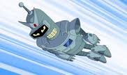
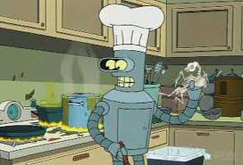
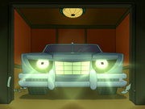
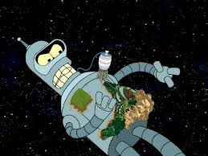
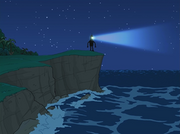
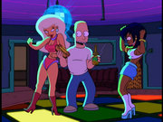
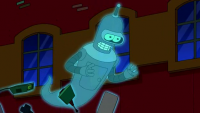

Contact Details
Bender Bending Rodriguez
Home address: "Robots Arms Apt." building, apartment number's 00100100
Work address: "Planet Express" building
email: bender@ilovebender.com
Personal information
- Creation
- I'm a high-tech robot; I was built in 2997 at Mom's Robot Factory as Bending Unit 22 (serial number 2716057) in Tijuana, Baja California, Mexico. I was created specifically for the relatively simple task of bending straight metal girders to various angles.
- Design
- My design is based on an original "gas-blasting" prototype developed byPF.
- My factory-set height is 5 ft 6 in (1.68 m); a little over 6 ft (1.8 m) with antenna.
- I have a body with a "shiny metal ass", two legs, two arms with three fingers each, a head with two replaceable eyes shaped like light-emitting diodes, a mouth used for fuel intake and voice communication, and a nose, but I choose not to wear it. My head has a data socket and remotely operated volume control. My body has a socket for a microphone jack, a dual-socket power receptacle, a reset button, a kill switch, and a self-destruct button.
- My head contains a 6502 Microprocessor, and my ass an Athlon II.
- Unlike other robots, I'm mortal and, according to PF's calculations, may have less than one billion years to live. Because of a manufacturing error that left me without a backup unit, my memory can't be transferred to another robot.
- Composition
- I'm made of 40% Zn, 40% Ti, 30% Fe, 40% CaMg(CO3)2, 40% Pb, 40% Luck/horseshoes, 40% Cr, 60% Storage space, 40% Scrap metal, 40% Wire, 40% Empty, and 40% Ass.
- Sourse of energy
- I operate on alcohol-based fuel, which is converted into electrical energy strong enough to power not only myself, but also small household appliances plugged into his power receptacle. When I stop drinking and begin to sober (in human terms), I become increasingly drunk-like and dysfunctional, and I grow a red beard of rust. I also have a nuclear reactor. However its location inside my body and purpose aren't specified.
Functions:
- My human-like character is also reinforced by my ability to display many traits like a whistling, snoring, having bloodshot eyes, crying, feeling at the least physical attraction, being tickled, dreaming, and belching.
- As a bending unit, I bend straight metal girders to various angles.
- I'm extremely durable and strong, as I'm able to break through solid objects, survive gunfire and explosions, function underwater or in the vacuum of space, and sustain extremely high temperatures.
- I disassemble and reassemble my body at will and operate each detached body part individually and remotely, by using my transmitter and antenna to send wireless signals.
- I use my chest cavity as a locker, which seems to store much more than is physically possible.
- My body's incredibly adaptive depending on the situation at hand; and I can produce needed objects at will, finding them stored in my main body cavity.
- I have a computer in my head with data storage with capacity in excess of 50 TB; I can perform calculations, but I'm a poor calculator.
Mission
My intention is jesting taboos, drinking, smoking, stealing, swearing, sitting back, watching TV, partying in clubs with robowomen, and killing all the people.
The main principle of my life: Everything in life can be solved by bending
.
Education
I was programmed for cold-bending structural steel and later attended Bending State University, where I majored in bending and minored in Robo-American Studies.
Career history
I had a first job at the Metalworking factory as the bending robot.
I currently work at the Planet Express as the assistant manager of sales.
Skills
- I can think and communicate, when my body's seemingly destroyed or completely detached from my head.
- I can use my chest as a boil kettle, hopback and fermentation tank to produce home-made beer; to store heads in jars, small children, alcohol, money, loot, the world's last darkroom.
- I constantly steal, ranging from the petty theft of wallets to much higher crimes like kidnapping Jay Leno's head and stealing Fry's blood.
- I sing folk songs.
- Saved all robots from destroying the Earth by President Nixon.
- Filmed in the Calculon's serial "All my Circuits".
- Fought vs. the race balls.
- Can play the bahjo and the piano.
- Gathered a million subscribers on Twitter.
Furthermore:
|  |  |  | |
| I can fly. | I can be a robowoman. | I'm fascinated with cooking, I'm the Planet Express ship's chef. | I was the were-car. |
|  |  |  |  |
| I was the God; on my body lived little men. | I can be a lighthouse. | I was the human Bender. | I was the ghost. |